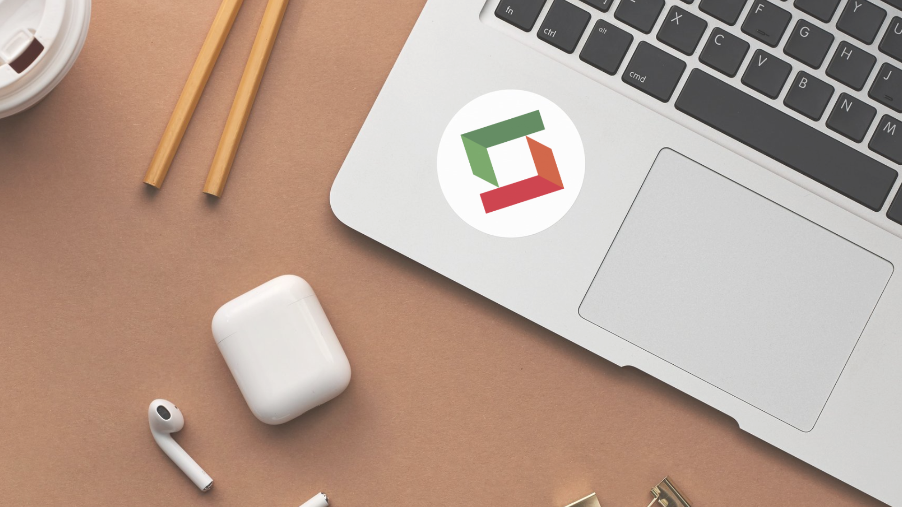

Pagina principal
LOW RISK es una empresa innovadora en el sector de la seguridad, cuyo pilar es el factor humano, integrada por profesionales altamente calificados que brinda servicios a empresas, organismos e instituciones públicas o privadas.
